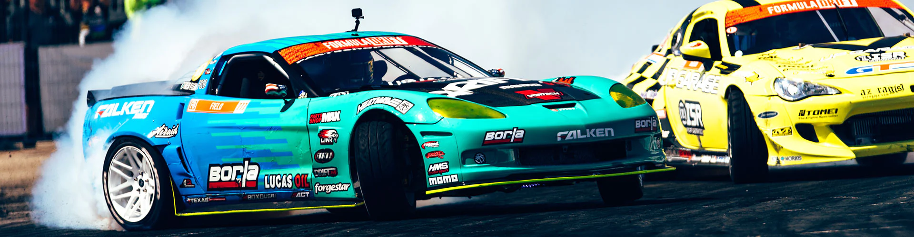

<!DOCTYPE html>
<html lang="en">
<head>
    <meta charset="UTF-8">
    <meta name="viewport" content="width=device-width, initial-scale=1.0">
    <title>Motorsport37 - Formula Drift</title>
    <link rel="stylesheet" href="../CSS/reset.css">
    <link rel="stylesheet" href="../CSS/categoria.css">
</head>
</html>
<body>
    <header>
        
            <nav>
                <ul>
                    <li><a href="../index.html">Início</a></li>
                    <li><a href="formula1.html">Formula 1</a></li>
                    <li><a href="motogp.html">MotoGP</a></li>
                    <li><a href="wec.html">WEC</a></li>
                    <li><a href="indy.html">IndyCar</a></li>
                    <li><a href="wrc.html">WRC</a></li>
                    <li><a href="formulad.html">Formula Drift</a></li>
                    <li><a href="nascar.html">Nascar</a></li>
                    <li><a href="game.html">Game</a></li>
                    <li><a href="creditos.html">Créditos</a></li>
                </ul>
            </nav>
            
    </header>

    <div class="conteudo">
        <header>
            <h1>Formula Drift</h1>
        </header>

        <h2>Como funciona a Formula Drift</h2>

        <p>A Formula Drift destaca a habilidade dos pilotos em controlar carros altamente modificados em derrapagens controladas.
           Ao contrário das corridas tradicionais, a pontuação é baseada na habilidade de derrapagem e estilo. Os pilotos competem
           em duelos emocionantes, onde a arte do drift é avaliada por juízes. A Formula Drift é conhecida pela atmosfera vibrante
           e pela proximidade dos carros durante as competições.</p>

        

        <h2>Onde a Formula Drift corre</h2>

        <p>A Formula Drift (FD) é uma competição de drifting que ocorre em vários locais, principalmente nos Estados Unidos.
           A série FD realiza eventos em pistas temporárias ou em circuitos fechados, transformando espaços como estacionamentos
           ou áreas urbanas em pistas específicas para o esporte.</p>

        

        <h2>Quando a Formula Drift começou</h2>

        <p>A Formula Drift (FD) foi fundada em 2005. Desde então, a série cresceu em popularidade e se tornou uma das principais
           competições de drifting no mundo. O drifting, como esporte automotivo, envolve controlar intencionalmente o deslizamento
           dos pneus traseiros enquanto o carro percorre uma curva, enfatizando a habilidade do piloto em manter o controle em situações
           de derrapagem. A Formula Drift tem contribuído significativamente para o desenvolvimento e reconhecimento do drifting
           como uma forma única de competição automotiva.</p>

           

        <h2>Como funcionam os carros de Formula Drift</h2>

        <p>Os carros da Formula Drift (FD) passam por extensas modificações para atender às necessidades específicas do drifting.
           Apresentam motores de alta potência, tração traseira, suspensão ajustável, pneus especiais para drifting, freios de mão hidráulicos,
           aerodinâmica personalizada, gaiola de proteção e peso equilibrado. Cada piloto personaliza seu carro para se alinhar com seu estilo
           e estratégias de competição, visando realizar derrapagens controladas com precisão e impressionar os juízes durante as corridas.</p>

        

        <h2>Qual o motor da Formula Drift</h2>

        <p>Os carros da Formula Drift são altamente personalizados, e não há um único tipo de motor específico obrigatório para
           todos os participantes. Os pilotos têm flexibilidade para escolher e modificar os motores de acordo com suas preferências
           e estratégias de desempenho. Isso resulta em uma variedade de motores sendo utilizados na Formula Drift, desde motores
           V8 até motores rotativos, dependendo das escolhas individuais dos pilotos e das características desejadas para o drifting.
           Cada equipe e piloto podem selecionar um motor que atenda às suas necessidades de potência e desempenho para competir efetivamente no esporte.</p>

           <div class="image-container">
            
            
        </div>

        <h2>Quantos pilotos e equipes competem na Formula Drift</h2>

        <p>O número exato de pilotos e equipes na Formula Drift pode variar de temporada para temporada, pois novos competidores entram na
           categoria e alguns podem sair. Geralmente, a Formula Drift apresenta uma variedade de pilotos e equipes ao longo de uma temporada,
           e o número total de participantes pode superar 30 pilotos. Cada piloto geralmente representa uma equipe, mas equipes podem ter mais
           de um carro em competição.</p>

        

        <h2>Quem são os pilotos de Formula Drift mais bem-sucedidos de todos os tempos</h2>

        <p>A Formula Drift não segue um formato tradicional de campeonato com títulos mundiais, mas alguns pilotos notáveis incluem Chris Forsberg,
           tricampeão (2009, 2014, 2016), Vaughn Gittin Jr., campeão em 2010, Fredric Aasbø, campeão em 2015, James Deane, bicampeão em 2017 e 2018,
           e Daigo Saito, campeão em 2012. O sucesso é avaliado pela consistência, habilidade, vitórias e impacto na cena do drifting.</p>

        

    </div>

    <footer>
        <p>&copy; 2023 MilenaNovka. Todos os direitos reservados.</p>
    </footer>
    
</body>